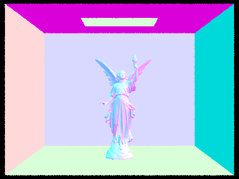

Overview:
In this project, we basically build up to implementing global illumination by starting with implementing the building blocks, creating rays, sampling
pixels, and intersecting primitive objects. We speed up intersection tests with BVH structures, then begin implementing direct illumination. Then with
direct lighting implemented, we can use that to recursively calculate bounce lighting, which provides our global illumination. Finally, we put in a
slight optimization to stop sampling unnecessarily when we've converged to a clean result for a given point already.
Task1:
To begin with, the ray generation required a couple transformations from the normalized image space, to camera space, and then to world space. First,
we notice that from image space to camera space, the center of the viewing window goes from (0.5, 0.5) in the x, y coordinates to (0, 0) in the x, y
coordinates, so we can see that a translation of (-0.5, -0.5) happens. Also, the viewing window is 2 * (tan(0.5 * hFov)) wider and 2 * (tan(0.5 * vFov)
taller, so we also know to use those values for the scaling. We put these values into separate translation and scaling matrices and then multiply them
together in order to get the transformation matrix for image space to camera space. Using this transformation matrix, we can multiply the normalized
image coordinates (with a 1 for its z-coordinate) in order to get the image coordinate transformed to camera space. Finally we set the result's z coord
to -1, since it will lie in the virtual camera sensor. Normalizing this vector, we can use it as the direction vector for our camera ray, with the pos
of the camera used to define the origin of the ray in world space. Next, we just multiply the direction vector with the c2w matrix in order to transform
it from camera space to world space, which ultimately gives us the ray in world space in conjunction with the camera's world position defined in pos.
To estimate the illumination of a pixel, we use Monte Carlo integration, getting ns_aa number of samples from a random position in the bounds of the
pixel's (x + [0,1],y+ [0,1]). We scale down this ocoordinate by dividing its x by sampleBuffer.w and y by sampleBuffer.h to put it into normalized image
space, and then pass this coordinate into the ray generation function, which is then used in the global illumination estimate function. This result is added
to the sum, which is divided at the end by ns_aa to calculate the approximation of the illumination of the pixel.
For triangle intersection, I used the Möller Trumbore algorithm to calclulate the intersection of the triangle. By following the equations laid out in the
lecture, the calculations ultimately give you a t, which is the time of intersection with the plane that the triangle lies in, b1, b2, and b0 = 1 - b1 - b2.
b0, b1, and b2 represent barycentric coordinates of the triangle, so we can check if the triangle is intersected by the ray if 1. the t value lies within the
min and max t of the ray, and 2, all the barycentric coordinates are positive. If it does in fact intersect, we can populate the values of the provided Intersection
with the appropriate values, the most notable of which is the normal coordinate which is calculated using barycentric interpolation with the b's and the normals
at the points of the triangle.
Sphere intersection was implemented by once again following the equations provided in lecture. At the end, the calculations result in two t values from solving
the quadratic equation (if the quadratic equation results in a negative square root, we say there is no intersection). Starting with the smaller t value (which
implies a closer intersection), we check if the v is within the range of the ray's min and max t, and if it is, we populate Intersection appropriatley, calculating
the normal by getting the ray from the sphere's center to the point of intersection and then normalizing that. Also of note is that in both sphere and triangle
intersection, we're updating the ray's max_t to be the latest point of intersection so that we are never rendering something that is further behind something we've
already intersected.
Spheres
Gems
Cow

Banana
Task 2:
The bvh construction algorithm that I used is a recursive algorithm. It starts by establishing a bounding box for the node currently being created using nodes encompassed
by the input start and end. It then creates a new bvh node using this bounding box. The next step is determined by whether this current node is a leaf node or not, which
is determined by how many primitives are in the node, and is checked by seeing if the node's end - start is less than or equal to the max leaf size. If it is, then the
node's start and end are set to the input start and end, its left and right children are set to null, and the node is returned, ending the recursion. Otherwise, the
node is not a leaf node and needs to be further partitioned. To do this, it first decides what the longest axis is by checking the extent of the bounding box object.
This longest axis will be chosen as the axis to be splitting upon. For choosing the actual split point on this axis, it takes the average position on this axis of all
the primitives in this bounding box and uses this as the splitting point. (Originally I used the midpoint of the bounding box on the axis as the split point, but this lead
to a stack overflow on generating the bvh for CBlucy.) After getting the split point, it uses std::partition to partition within the range of start and end, where what side
of the partition a primitive is on is determined by comparing that primitive's centroid's position on the axis to the split point, placing the primitive in one partition if
it's lower than the split point, and the other partition if it is higher. With the primitives partitioned, the next recursive is started by assigning the current node's
left child to another call of this function, except only ranging from the input start point to the newly calculated mid point. Similarly, the right child is assigned to
another call of the function with a range from the mid primitive to the end. To cover for the edge case where a partition would leave one partition empty, at a minimum,
the start primitive is always placed into one partition, while the end primitive is always placed into the other one.
Peter
MaxPlanck
Lucy
 Rendered with 8 cores and resolution of 800 x 600:
Banana:
Without bvh: 13.4015s
With bvh: 0.0987s
Cow:
Without bvh: 31.9632s
With bvh: 0.1180
Bunny:
Without bvh: 269.5522s
With bvh: 0.1459s
There's an obviously massive speed up here in all the cases. Importantly, the rendering time does not increase nearly as much in relation to the number of primitives
compared to without bvh acceleration. As expected, it seems that the rendering goes from ~O(N) in relation to primitives to about O(log2(N)). This can be seen in the
cow and bunny render, where the cow has about 5000 primitives, and gets a speed up of around 5000/log2(5000). The bunny render has around 33000 primitives and gets a
similar result.
Task 3:
The hemisphere direct lighting implementation works by doing a Monte Carlo estimation for the lighting. It gets num_samples samples of the lighting by first picking a point
on a hemisphere uniformly randomly. It creates an array that has origin hit_p, where the camera ray hits, and direction world_w_j, which is the ranodmly selected vector
translated to world space by multiplying by the transformation matrix o2w. Finally, we check if that ray intersects a primitive in the bvh. If it does, we calculate the
sample lighting by multiplying the f of the original input's intersection's bsdf, the new ray intersect's emission value, and cos_j, which is calculated with the dot product
of the randomly chosen vector and the original intersect's normal. We then sum the num_samples samples together and then divide them by num_samples in order to get the average.
Then, we divide by the probability of each of the samples, which is 1/2 * pi for each of them since we are sampling uniformly randomly. This is equivalent to multiplying the
averaged samples by 2pi. Finally, we return that final calculation as the estimated lighting.
The importance sampling is relatively similar to the hemisphere lighting. The main difference is that we sample each of the lights in the scene ns_area_light times (unless it's
a point light). In order to get a light's emission on the intersect point, we call the function sample_L on the light, using hit_p as the position, and ultimately giving us the
emission at that point, as well as the direction towards the light from hit_p (wi), the distance to the light, and the pdf for that random sample. A ray is created similar to the
hemisphere estimation using hit_p as the origin and the returned wi as the direction. Importantly, we also set the ray's max_t to distToLight - EPS_F. Since we know wi is a
vector, this means that if this ray intersects anything in the bvh, there is an object blocking the light to the hit point. But if there's no intersection, then we proceed as
normal, adding the result of the initial intersection's bsdf->f * the emitted radiance returned by sample_L * cos_j, calculated in the same way as for the hemisphere. However,
since the probabilities are no longer the same for every sample, we know divide the individual sample's results by the pdf returned by sample_L. Finally, as before, we average
all the samples and return that as the estimated lighting of the intersection point.
Spheres with hemisphere
Spheres with importance
CBbunny with hemisphere
CBbunny with importance
CBbunny with importance sampling, l 1 and s 1
CBbunny with importance sampling, l 4 and s 1
CBbunny with importance sampling, l 16 and s 1
CBbunny with importance sampling, l 64 and s 1
The noise goes down as the number of light rays goes up, as expected.
Although uniform hemisphere sampling and importance sampling using the lights get their estimates in similar ways, ultimately the lighting sampling works much better. Since
hemisphere sampling ends up testing so many rays that don't intersect any lighting, many of the samples aren't of much use to the estimation, meaning more samples on average
are needed to reduce the noise, in comparison to importance sampling, which insures that each of the samples is being taken from a light source.
Task 4:
My implementation follows very closely to the one presented in lecture. First, we establish the probability of continuing when in the russian roulette termination stage as
continue_p = 1 - 0.35. It sets the base radiance to return as the radiance from one single bounce. We'll return this radiance plus the radiance of any possible future bounces.
Next, we use the sample_f function of the inputed isect's bsdf in order to generate an f for the calculation of possible bounces, as well as generating a random direction, wi,
along with the pdf for that wi. We transform that direction wi to world space by multiplying it by the transform matrix o2w, and then use that direction as well as the position
of the hit to create a new ray. This ray's min_t is set to EPS_F for error avoidance purposes, and its depth is set to the input ray's depth - 1 in order to simulate a bounce
having occurred. In order to avoid any overflow errors, if the input ray's depth is 0, we set the new ray's depth to also be 0. After the ray's construction, we check to see if
it intersects the bvh. If it does, then that means that we might possibly add in a bounce radiance term. Specifically, if the depth of the input ray is above 1, we will guarantee
bounce, which is adding f (calculated earlier) * cos_theta(wi) (where wi is in object space) / pdf (calculated earlier with f) * a recursive call to at_least_one_bounce_radiance
using the newly generated ray and intersect data as inputs. Furthermore, if the depth of the input ray is <= 1, we then start probabilistically adding bounce radiances using
russian roulette termination and the continue_p calculated earlier. Specifically, if coin_flip(continue_p) is true, we add a bounce radiance calculated in the same way as above.
Crucially however, in that calculation, we also add another division by continue_p in order to keep the estimate unbiased. Once all the recursion has finished, the function will
output the radiance at the intersection with some random bounce radiance also added.
Bench with global lighting
Dragon with global lighting
Wall-e with global lighting
Spheres, only direct lighting
Spheres, only indirect lighting
Bunny m = 0
Bunny m = 1
Bunny m = 2
Bunny m = 3
Bunny m = 100
m = 0 wasn't really defined so I chose it to mean the zero bounce emission only. All of these images look nearly identical, which I believe should be expected behavior based
on how there's little light sources in this image and the diminishing amount of light from subsequent bounces.
Spheres s = 1
Spheres s = 2
Spheres s = 4
Spheres s = 8
Spheres s = 16
Spheres s = 64
Spheres s = 1024
As should be expected, as the number of samples goes up, the noise goes down.
Task 5:
The adaptive sampling is done by adding a few calculations during the radiance sample taking in raytrace_pixel. Outside of the loop for the ray generation, we initialize values
for the number of samples that have been taken, s1, and s2 all to 0. Generally, the function doesn't do anything new except increment the sampleNum on every loop, adds the sampled
radiance to s1, and adds the sampled radiance squared to s2. However, when the loop index % samplesPerBatch (meaning we check every samplesPerBatch iterations) and the sampleNum > 1,
we calculate a value I as outlined in the project spec. We define a variable sigma to equal the square root of ( 1 / (sampleNum - 1)) * (s2 - (s1^2 / sampleNum)). Then, we set I
to 1.96 * sigma / (sqrt(sampleNum)). Then, if I is less than or equal to the value maxTolerance * mu, where mu is equal to s1 / sampleNum, then we break out of the radiance estimation
loop. Then, when writing the radiance to the sample buffer, we divide the total sum of the radiance by sampleNum instead of ns_aa. Similarly, we set sampleCountBuffer's value at this
pixel to sampleNum. Conceptually, what this algorithm is doing is seeing if the estimation has converged to some value within our tolerance and terminates the estimation early if this
is the case.
Spheres s = 2048
Spheres sample rate
https://cal-cs184-student.github.io/sp22-project-webpages-ReplicaC/proj3-1/index.html